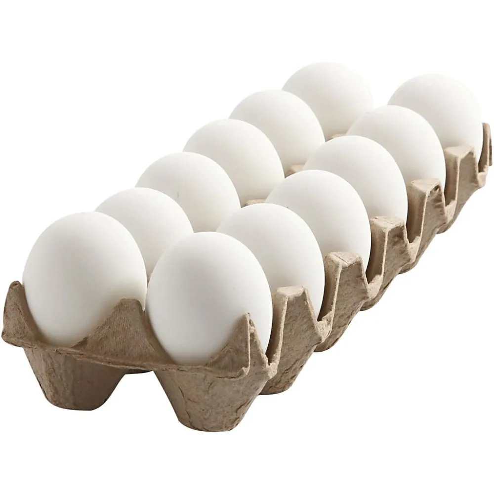
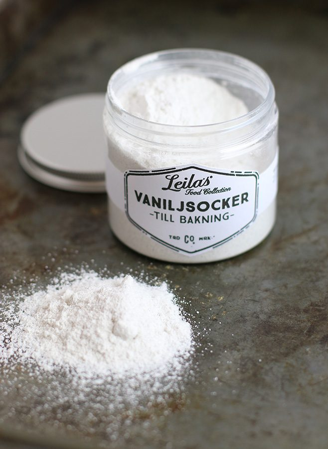
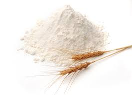
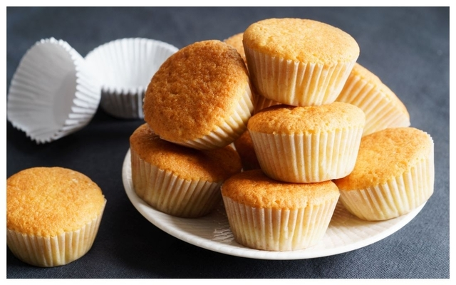

Ingredienser
4st Ägg
200g Mat & Bak Smör
4 dl Strösocker
6 dl Vetemjöl
2 dl Standardmjölk
4 tsk Bakpulver
4 tsk Vaniljsocker




Recept
Muffins är lätt att baka och man kan enkelt experimentera med olika smaksättningar och toppings som frosting eller strössel. Detta är ett enkelt grundrecept som ger ca 24 muffins.
Sätt ugnen på 200 grader.
Smält smöret, ställ åt sidan och låt svalna lite.
Vispa ägg och socker pösigt i en bunke.
Blanda mjöl, bakpulver och vaniljsocker i en annan bunke. Blanda i ägg- och sockerblandningen.
Tillsätt växelvis det smälta smöret och mjölken i de andra ingredienserna. Blanda försiktigt ihop smeten
Fördela smeten i muffinsformar, fyll dem ca 2/3 delar. Grädda mitt i ugnen i ca 15 minuter.